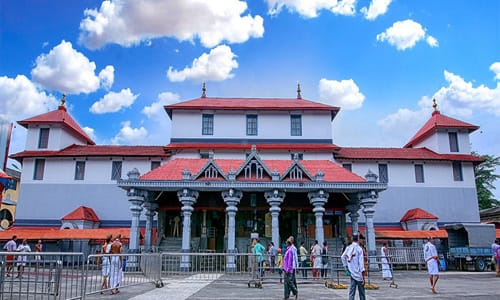

Dharmasthala is an important pilgrimage destination in Karnataka, situated in Dakshina Kannada district. The town is known for Sri Manjunatha Swamy Temple and its longstanding traditions of hospitality, service and religious observance. Many visitors travel from Mangalore for darshan, family pilgrimages and special occasions.
Preparing in advance can make the journey easier. Road conditions, traffic, temple queues and festival schedules all affect how much time you need. A realistic plan should prioritise the temple visit rather than squeezing in too many additional stops.
What You'll Find Here
About Sri Manjunatha Swamy Temple
The temple is the principal attraction for most visitors. Devotees come to offer prayers and participate in religious observances. Dharmasthala is also recognised for its traditions of charitable service and hospitality, making the town significant beyond its temple architecture alone.
First-time visitors should review current temple guidance, opening hours, dress expectations and any special arrangements for their intended date. Do not assume that schedules remain unchanged during festivals or special events.

Planning Your Journey from Mangalore
Before leaving, confirm your pickup location and departure time. Your total journey will depend on the starting point, traffic, road conditions and stops. Starting early can provide more flexibility, particularly if you expect crowds or want to return to Mangalore the same day.
Keep essentials accessible and plan for a break if anyone in your group needs one. Travelling with older family members or young children may require additional time for meals, rest and walking.
Darshan and Visitor Tips
- Check official temple information for current darshan timings.
- Confirm any booking or registration requirements for special rituals.
- Follow queue, footwear, photography and dress guidelines.
- Allow extra time on weekends, public holidays and festival days.
- Follow directions for parking and designated visitor areas.
- Keep personal belongings secure and carry essential medicines.
Food and Rest Arrangements
Many pilgrims plan their meals around the temple visit. Confirm current meal arrangements and timings with official sources if they are important to your schedule. If travelling with children or people who need specific food, carry suitable snacks as a backup.
Suggested One-Day Travel Plan
Depart Mangalore after confirming the pickup and expected route. Allow time for traffic and a comfortable stop if needed.
Proceed according to the temple's current visitor arrangements. Follow instructions from temple staff and allow for queues.
Allow time for the temple visit and a meal. The actual duration depends on queues and the day's arrangements.
Begin the return journey when your group is ready. Add another destination only if time and road conditions make it practical.
This itinerary is a planning example, not a promise of arrival times. If the temple is especially busy, a later return or overnight stay may be more comfortable.
Should You Add Other Destinations?
Some travellers want to combine Dharmasthala with other temples in the region. Whether this is practical depends on your starting time, darshan duration, the locations involved and your return schedule. Discuss all intended stops before travelling rather than adding distant attractions at the last moment.
Enquire About a Taxi from Mangalore
Radhakrishna Taxi Service accepts enquiries for journeys to Dharmasthala and other Karnataka pilgrimage destinations. When contacting the service, provide your travel date, pickup point, passenger count, return requirements and preferred vehicle.
Before confirming, ask about the total fare, included duration or distance, waiting arrangements and any tolls, parking charges or other applicable costs. Request confirmation of vehicle availability for your date.
Enquire on WhatsAppFrequently Asked Questions
Can I travel from Mangalore to Dharmasthala and return in one day?
A same-day trip can be planned, but practical timing depends on the road journey, queues and time spent at the temple. Start early and allow flexibility.
What should I check before visiting the temple?
Confirm current darshan timings, visitor guidelines, special ritual arrangements and any registration requirements with official temple sources.
Can I include other temples in the trip?
Possibly, but consider the distance and time needed for darshan at each location. Prioritise your main destination first.
How do I enquire about a taxi?
Call +91 81477 71217 or send your travel requirements through the WhatsApp enquiry link on this page.
Temple schedules, road conditions and visitor arrangements may change. Verify details before travelling.